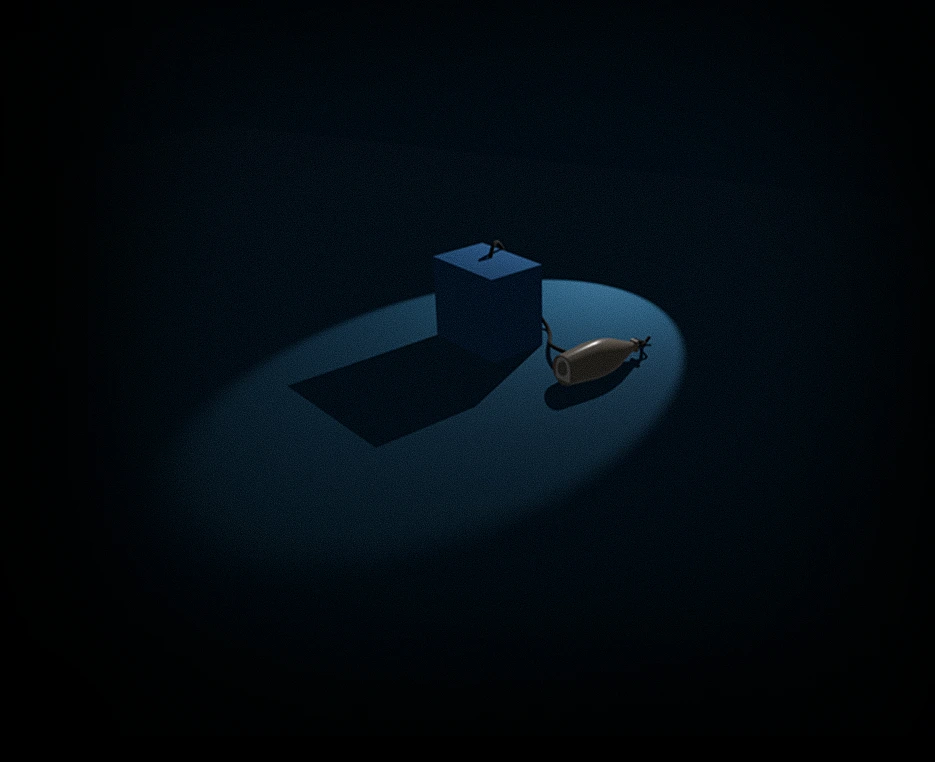

LIEVEN GOUWY Systems Game Design / Narrative Design / Showrunner





00:00
Rudy's stepcounter: 1
The more things go on moving, interrelating, conflicting, changing, the less balance there is and the more life. - U. K. Le Guin